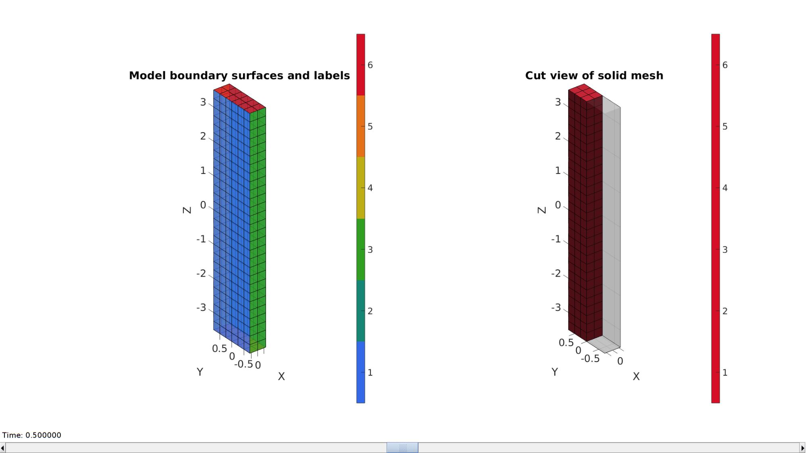
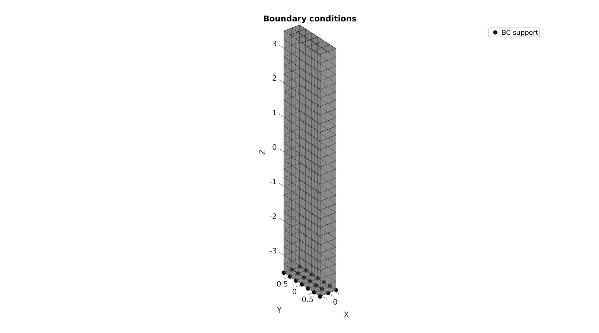
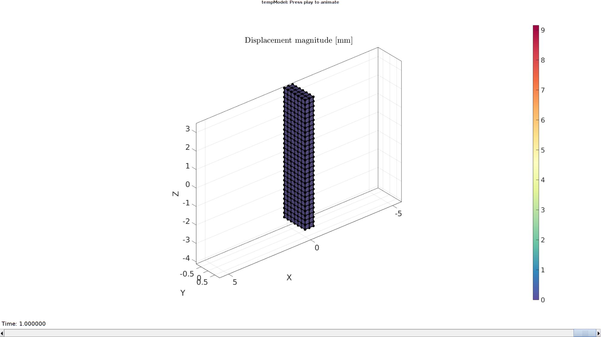
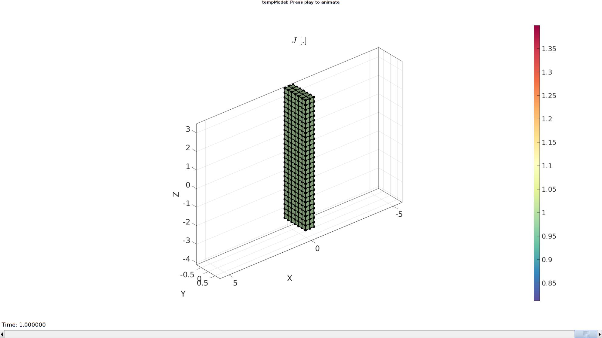

DEMO_febio_0078_actuator_perfect_osmometer_01
Below is a demonstration for:
- Building geometry for a cube with hexahedral elements
- Defining the boundary conditions
- Coding the febio structure
- Running the model
- Importing and visualizing the displacement and stress results
Contents
Keywords
- febio_spec version 4.0
- febio, FEBio
- perfect osmometer
- hexahedral elements, hex8
- cube, box, rectangular
- static, solid
- displacement logfile
- stress logfile
clear; close all; clc;
Plot settings
fontSize=20;
faceAlpha1=0.8;
markerSize=40;
markerSize2=25;
lineWidth=3;
cMap=spectral(250); %colormap
Control parameters
% Path names defaultFolder = fileparts(fileparts(mfilename('fullpath'))); savePath=fullfile(defaultFolder,'data','temp'); % Defining file names febioFebFileNamePart='tempModel'; febioFebFileName=fullfile(savePath,[febioFebFileNamePart,'.feb']); %FEB file name febioLogFileName=[febioFebFileNamePart,'.txt']; %FEBio log file name febioLogFileName_disp=[febioFebFileNamePart,'_disp_out.txt']; %Log file name for exporting displacement febioLogFileName_vol=[febioFebFileNamePart,'_vol_out.txt']; %Log file name for exporting stress febioLogFileName_stress_prin=[febioFebFileNamePart,'_stress_prin_out.txt']; %Log file name for exporting principal stress %Specifying dimensions and number of elements sampleWidth=0.5; %Width sampleThickness=1.5; %Thickness sampleHeight=7; %Height pointSpacings=0.25*ones(1,3); %Desired point spacing between nodes numElementsWidth=round(sampleWidth/pointSpacings(1)); %Number of elemens in dir 1 numElementsThickness=round(sampleThickness/pointSpacings(2)); %Number of elemens in dir 2 numElementsHeight=round(sampleHeight/pointSpacings(3)); %Number of elemens in dir 3 %Material parameter set E_youngs=1; v_pois=0.3; anisotropicOption=0; if anisotropicOption==1 ksi=[500 500 0.01]; beta=[3 3 3]; end iosm=300; bosm_ini=iosm; bosm_diff_amp=200; % FEA control settings numTimeSteps=25; %Number of time steps desired max_refs=25; %Max reforms max_ups=0; %Set to zero to use full-Newton iterations opt_iter=25; %Optimum number of iterations max_retries=5; %Maximum number of retires dtmin=(1/numTimeSteps)/100; %Minimum time step size dtmax=1/numTimeSteps; %Maximum time step size runMode='external';
Creating model geometry and mesh
A box is created with tri-linear hexahedral (hex8) elements using the hexMeshBox function. The function offers the boundary faces with seperate labels for the top, bottom, left, right, front, and back sides. As such these can be used to define boundary conditions on the exterior.
% Create a box with hexahedral elements cubeDimensions=[sampleWidth sampleThickness sampleHeight]; %Dimensions cubeElementNumbers=[numElementsWidth numElementsThickness numElementsHeight]; %Number of elements outputStructType=2; %A structure compatible with mesh view [meshStruct]=hexMeshBox(cubeDimensions,cubeElementNumbers,outputStructType); %Access elements, nodes, and faces from the structure E=meshStruct.elements; %The elements V=meshStruct.nodes; %The nodes (vertices) Fb=meshStruct.facesBoundary; %The boundary faces Cb=meshStruct.boundaryMarker; %The "colors" or labels for the boundary faces elementMaterialIndices=ones(size(E,1),1); %Element material indices
VE=patchCentre(E,V); logicSide=VE(:,1)<0; E1=E(logicSide,:); %First set E2=E(~logicSide,:); %Second set E=[E1;E2]; %Reorder full set
Plotting model boundary surfaces and a cut view
hFig=cFigure; subplot(1,2,1); hold on; title('Model boundary surfaces and labels','FontSize',fontSize); gpatch(Fb,V,Cb,'k',faceAlpha1); colormap(gjet(6)); icolorbar; axisGeom(gca,fontSize); hs=subplot(1,2,2); hold on; title('Cut view of solid mesh','FontSize',fontSize); optionStruct.hFig=[hFig hs]; meshView(meshStruct,optionStruct); axisGeom(gca,fontSize); drawnow;
Defining the boundary conditions
The visualization of the model boundary shows colors for each side of the cube. These labels can be used to define boundary conditions.
%Prescribed displacement nodes bcSupportList=unique(Fb(Cb==5,:)); %Node set for selected face
Visualizing boundary conditions. Markers plotted on the semi-transparent model denote the nodes in the various boundary condition lists.
hf=cFigure; title('Boundary conditions','FontSize',fontSize); xlabel('X','FontSize',fontSize); ylabel('Y','FontSize',fontSize); zlabel('Z','FontSize',fontSize); hold on; gpatch(Fb,V,'kw','k',0.5); hl(1)=plotV(V(bcSupportList,:),'k.','MarkerSize',markerSize); legend(hl,{'BC support'}); axisGeom(gca,fontSize); camlight headlight; drawnow;
Defining the FEBio input structure
See also febioStructTemplate and febioStruct2xml and the FEBio user manual.
%Get a template with default settings [febio_spec]=febioStructTemplate; %febio_spec version febio_spec.ATTR.version='4.0'; %Module section febio_spec.Module.ATTR.type='biphasic'; %Control section febio_spec.Control.analysis='STEADY-STATE'; febio_spec.Control.time_steps=numTimeSteps; febio_spec.Control.step_size=1/numTimeSteps; febio_spec.Control.solver.max_refs=max_refs; febio_spec.Control.solver.qn_method.max_ups=max_ups; febio_spec.Control.time_stepper.dtmin=dtmin; % febio_spec.Control.time_stepper.dtmax=dtmax; febio_spec.Control.time_stepper=rmfield(febio_spec.Control.time_stepper,'dtmax'); %Remove existing template dtmax definition febio_spec.Control.time_stepper.dtmax.ATTR.lc=1; %Set load curve id for dtmax febio_spec.Control.time_stepper.dtmax.VAL=1; %Set value febio_spec.Control.time_stepper.max_retries=max_retries; febio_spec.Control.time_stepper.opt_iter=opt_iter; %Set globals/constants febio_spec.Globals.Constants.R=8.314e-6; febio_spec.Globals.Constants.T=310; febio_spec.Output.plotfile.var{end+1}.ATTR.type='fluid pressure'; febio_spec.Output.plotfile.var{end+1}.ATTR.type='effective fluid pressure'; %Material section materialName1='Material1'; febio_spec.Material.material{1}.ATTR.name=materialName1; febio_spec.Material.material{1}.ATTR.type='solid mixture'; febio_spec.Material.material{1}.ATTR.id=1; febio_spec.Material.material{1}.mat_axis.ATTR.type='vector'; febio_spec.Material.material{1}.mat_axis.a=[1 0 0]; febio_spec.Material.material{1}.mat_axis.d=[0 1 0]; febio_spec.Material.material{1}.solid{1}.ATTR.type='perfect osmometer'; febio_spec.Material.material{1}.solid{1}.phiw0=0.8; febio_spec.Material.material{1}.solid{1}.iosm=iosm; febio_spec.Material.material{1}.solid{1}.bosm.ATTR.lc=2; febio_spec.Material.material{1}.solid{1}.bosm.VAL=1; febio_spec.Material.material{1}.solid{2}.ATTR.type='neo-Hookean'; febio_spec.Material.material{1}.solid{2}.E=1; febio_spec.Material.material{1}.solid{2}.v=0.3; if anisotropicOption==1 febio_spec.Material.material{1}.solid{3}.ATTR.type='ellipsoidal fiber distribution'; febio_spec.Material.material{1}.solid{3}.ksi=ksi; febio_spec.Material.material{1}.solid{3}.beta=beta; end materialName2='Material2'; febio_spec.Material.material{2}.ATTR.name=materialName2; febio_spec.Material.material{2}.ATTR.type='solid mixture'; febio_spec.Material.material{2}.ATTR.id=2; febio_spec.Material.material{1}.mat_axis.ATTR.type='vector'; febio_spec.Material.material{1}.mat_axis.a=[1 0 0]; febio_spec.Material.material{1}.mat_axis.d=[0 1 0]; febio_spec.Material.material{2}.solid{1}.ATTR.type='perfect osmometer'; febio_spec.Material.material{2}.solid{1}.phiw0=0.8; febio_spec.Material.material{2}.solid{1}.iosm=iosm; febio_spec.Material.material{2}.solid{1}.bosm.ATTR.lc=3; febio_spec.Material.material{2}.solid{1}.bosm.VAL=1; febio_spec.Material.material{2}.solid{2}.ATTR.type='neo-Hookean'; febio_spec.Material.material{2}.solid{2}.E=E_youngs; febio_spec.Material.material{2}.solid{2}.v=v_pois; if anisotropicOption==1 febio_spec.Material.material{2}.solid{3}.ATTR.type='ellipsoidal fiber distribution'; febio_spec.Material.material{2}.solid{3}.ksi=ksi; febio_spec.Material.material{2}.solid{3}.beta=beta; end % Mesh section % -> Nodes febio_spec.Mesh.Nodes{1}.ATTR.name='Object1'; %The node set name febio_spec.Mesh.Nodes{1}.node.ATTR.id=(1:size(V,1))'; %The node id's febio_spec.Mesh.Nodes{1}.node.VAL=V; %The nodel coordinates % -> Elements partName1='Part1'; febio_spec.Mesh.Elements{1}.ATTR.name=partName1; %Name of this part febio_spec.Mesh.Elements{1}.ATTR.type='hex8'; %Element type febio_spec.Mesh.Elements{1}.elem.ATTR.id=(1:1:size(E1,1))'; %Element id's febio_spec.Mesh.Elements{1}.elem.VAL=E1; %The element matrix partName2='Part2'; febio_spec.Mesh.Elements{2}.ATTR.name=partName2; %Name of this part febio_spec.Mesh.Elements{2}.ATTR.type='hex8'; %Element type febio_spec.Mesh.Elements{2}.elem.ATTR.id=size(E1,1)+(1:1:size(E2,1))'; %Element id's febio_spec.Mesh.Elements{2}.elem.VAL=E2; %The element matrix % -> NodeSets nodeSetName1='bcSupportList'; febio_spec.Mesh.NodeSet{1}.ATTR.name=nodeSetName1; febio_spec.Mesh.NodeSet{1}.VAL=mrow(bcSupportList); %MeshDomains section febio_spec.MeshDomains.SolidDomain{1}.ATTR.name=partName1; febio_spec.MeshDomains.SolidDomain{1}.ATTR.mat=materialName1; febio_spec.MeshDomains.SolidDomain{2}.ATTR.name=partName2; febio_spec.MeshDomains.SolidDomain{2}.ATTR.mat=materialName2; %Boundary condition section % -> Fix boundary conditions febio_spec.Boundary.bc{1}.ATTR.name='zero_displacement_x'; febio_spec.Boundary.bc{1}.ATTR.type='zero displacement'; febio_spec.Boundary.bc{1}.ATTR.node_set=nodeSetName1; febio_spec.Boundary.bc{1}.x_dof=1; febio_spec.Boundary.bc{1}.y_dof=1; febio_spec.Boundary.bc{1}.z_dof=1; %LoadData section % -> load_controller febio_spec.LoadData.load_controller{1}.ATTR.name='LC_1'; febio_spec.LoadData.load_controller{1}.ATTR.id=1; febio_spec.LoadData.load_controller{1}.ATTR.type='loadcurve'; febio_spec.LoadData.load_controller{1}.interpolate='STEP'; febio_spec.LoadData.load_controller{1}.points.pt.VAL=[0 dtmax; 0.2 dtmax; 0.4 dtmax; 0.6 dtmax; 0.8 dtmax; 1 dtmax]; febio_spec.LoadData.load_controller{2}.ATTR.name='LC_2'; febio_spec.LoadData.load_controller{2}.ATTR.id=2; febio_spec.LoadData.load_controller{2}.ATTR.type='loadcurve'; febio_spec.LoadData.load_controller{2}.interpolate='LINEAR'; febio_spec.LoadData.load_controller{2}.points.pt.VAL=[0 bosm_ini; 0.25 bosm_ini+bosm_diff_amp; 0.5 bosm_ini; 0.75 bosm_ini-bosm_diff_amp; 1 bosm_ini]; febio_spec.LoadData.load_controller{3}.ATTR.name='LC_3'; febio_spec.LoadData.load_controller{3}.ATTR.id=3; febio_spec.LoadData.load_controller{3}.ATTR.type='loadcurve'; febio_spec.LoadData.load_controller{3}.interpolate='LINEAR'; febio_spec.LoadData.load_controller{3}.points.pt.VAL=[0 bosm_ini; 0.25 bosm_ini-bosm_diff_amp; 0.5 bosm_ini; 0.75 bosm_ini+bosm_diff_amp; 1 bosm_ini]; %Output section % -> log file febio_spec.Output.logfile.ATTR.file=febioLogFileName; febio_spec.Output.logfile.node_data{1}.ATTR.file=febioLogFileName_disp; febio_spec.Output.logfile.node_data{1}.ATTR.data='ux;uy;uz'; febio_spec.Output.logfile.node_data{1}.ATTR.delim=','; febio_spec.Output.logfile.element_data{1}.ATTR.file=febioLogFileName_vol; febio_spec.Output.logfile.element_data{1}.ATTR.data='J'; febio_spec.Output.logfile.element_data{1}.ATTR.delim=','; febio_spec.Output.logfile.element_data{2}.ATTR.file=febioLogFileName_stress_prin; febio_spec.Output.logfile.element_data{2}.ATTR.data='s1;s2;s3'; febio_spec.Output.logfile.element_data{2}.ATTR.delim=','; % Plotfile section febio_spec.Output.plotfile.compression=0;
Quick viewing of the FEBio input file structure
The febView function can be used to view the xml structure in a MATLAB figure window.
febView(febio_spec); %Viewing the febio file
Exporting the FEBio input file
Exporting the febio_spec structure to an FEBio input file is done using the febioStruct2xml function.
febioStruct2xml(febio_spec,febioFebFileName); %Exporting to file and domNode %system(['gedit ',febioFebFileName,' &']);
Running the FEBio analysis
To run the analysis defined by the created FEBio input file the runMonitorFEBio function is used. The input for this function is a structure defining job settings e.g. the FEBio input file name. The optional output runFlag informs the user if the analysis was run succesfully.
febioAnalysis.run_filename=febioFebFileName; %The input file name febioAnalysis.run_logname=febioLogFileName; %The name for the log file febioAnalysis.disp_on=1; %Display information on the command window febioAnalysis.runMode=runMode; febioAnalysis.maxLogCheckTime=10; %Max log file checking time [runFlag]=runMonitorFEBio(febioAnalysis);%START FEBio NOW!!!!!!!!
%%%%%%%%%%%%%%%%%%%%%%%%%%%%%%%%%%%%%%%%%%%%%%%%%%%%%%%%%%%%%%%%%%%%%%%%%%%
--------> RUNNING/MONITORING FEBIO JOB <-------- 01-May-2023 10:59:13
FEBio path: /home/kevin/FEBioStudio/bin/febio4
# Attempt removal of existing log files 01-May-2023 10:59:13
* Removal succesful 01-May-2023 10:59:13
# Attempt removal of existing .xplt files 01-May-2023 10:59:13
* Removal succesful 01-May-2023 10:59:13
# Starting FEBio... 01-May-2023 10:59:13
Max. total analysis time is: Inf s
* Waiting for log file creation 01-May-2023 10:59:13
Max. wait time: 10 s
* Log file found. 01-May-2023 10:59:13
# Parsing log file... 01-May-2023 10:59:13
number of iterations : 17 01-May-2023 10:59:14
number of reformations : 17 01-May-2023 10:59:14
------- converged at time : 0.04 01-May-2023 10:59:14
number of iterations : 17 01-May-2023 10:59:14
number of reformations : 17 01-May-2023 10:59:14
------- converged at time : 0.08 01-May-2023 10:59:14
number of iterations : 19 01-May-2023 10:59:14
number of reformations : 19 01-May-2023 10:59:14
------- converged at time : 0.12 01-May-2023 10:59:14
number of iterations : 18 01-May-2023 10:59:14
number of reformations : 18 01-May-2023 10:59:14
------- converged at time : 0.16 01-May-2023 10:59:14
number of iterations : 18 01-May-2023 10:59:14
number of reformations : 18 01-May-2023 10:59:14
------- converged at time : 0.2 01-May-2023 10:59:14
number of iterations : 19 01-May-2023 10:59:14
number of reformations : 19 01-May-2023 10:59:14
------- converged at time : 0.24 01-May-2023 10:59:14
number of iterations : 12 01-May-2023 10:59:14
number of reformations : 12 01-May-2023 10:59:14
------- converged at time : 0.28 01-May-2023 10:59:14
number of iterations : 17 01-May-2023 10:59:14
number of reformations : 17 01-May-2023 10:59:14
------- converged at time : 0.32 01-May-2023 10:59:14
number of iterations : 16 01-May-2023 10:59:15
number of reformations : 16 01-May-2023 10:59:15
------- converged at time : 0.36 01-May-2023 10:59:15
number of iterations : 15 01-May-2023 10:59:15
number of reformations : 15 01-May-2023 10:59:15
------- converged at time : 0.4 01-May-2023 10:59:15
number of iterations : 18 01-May-2023 10:59:15
number of reformations : 18 01-May-2023 10:59:15
------- converged at time : 0.44 01-May-2023 10:59:15
number of iterations : 19 01-May-2023 10:59:15
number of reformations : 19 01-May-2023 10:59:15
------- converged at time : 0.48 01-May-2023 10:59:15
number of iterations : 18 01-May-2023 10:59:15
number of reformations : 18 01-May-2023 10:59:15
------- converged at time : 0.52 01-May-2023 10:59:15
number of iterations : 18 01-May-2023 10:59:15
number of reformations : 18 01-May-2023 10:59:15
------- converged at time : 0.56 01-May-2023 10:59:15
number of iterations : 18 01-May-2023 10:59:15
number of reformations : 18 01-May-2023 10:59:15
------- converged at time : 0.6 01-May-2023 10:59:15
number of iterations : 18 01-May-2023 10:59:15
number of reformations : 18 01-May-2023 10:59:15
------- converged at time : 0.64 01-May-2023 10:59:15
number of iterations : 18 01-May-2023 10:59:16
number of reformations : 18 01-May-2023 10:59:16
------- converged at time : 0.68 01-May-2023 10:59:16
number of iterations : 18 01-May-2023 10:59:16
number of reformations : 18 01-May-2023 10:59:16
------- converged at time : 0.72 01-May-2023 10:59:16
number of iterations : 13 01-May-2023 10:59:16
number of reformations : 13 01-May-2023 10:59:16
------- converged at time : 0.76 01-May-2023 10:59:16
number of iterations : 18 01-May-2023 10:59:16
number of reformations : 18 01-May-2023 10:59:16
------- converged at time : 0.8 01-May-2023 10:59:16
number of iterations : 16 01-May-2023 10:59:16
number of reformations : 16 01-May-2023 10:59:16
------- converged at time : 0.84 01-May-2023 10:59:16
number of iterations : 17 01-May-2023 10:59:16
number of reformations : 17 01-May-2023 10:59:16
------- converged at time : 0.88 01-May-2023 10:59:16
number of iterations : 16 01-May-2023 10:59:16
number of reformations : 16 01-May-2023 10:59:16
------- converged at time : 0.92 01-May-2023 10:59:16
number of iterations : 19 01-May-2023 10:59:16
number of reformations : 19 01-May-2023 10:59:16
------- converged at time : 0.96 01-May-2023 10:59:16
number of iterations : 19 01-May-2023 10:59:17
number of reformations : 19 01-May-2023 10:59:17
------- converged at time : 1 01-May-2023 10:59:17
Elapsed time : 0:00:03 01-May-2023 10:59:17
N O R M A L T E R M I N A T I O N
# Done 01-May-2023 10:59:17
%%%%%%%%%%%%%%%%%%%%%%%%%%%%%%%%%%%%%%%%%%%%%%%%%%%%%%%%%%%%%%%%%%%%%%%%%%%
Import FEBio results
if runFlag==1 %i.e. a succesful run
% Importing nodal displacements from a log file dataStruct=importFEBio_logfile(fullfile(savePath,febioLogFileName_disp),0,1); %Access data N_disp_mat=dataStruct.data; %Displacement timeVec=dataStruct.time; %Time %Create deformed coordinate set V_DEF=N_disp_mat+repmat(V,[1 1 size(N_disp_mat,3)]);
Plotting the simulated results using anim8 to visualize and animate deformations
DN_magnitude=sqrt(sum(N_disp_mat(:,:,end).^2,2)); %Current displacement magnitude % Create basic view and store graphics handle to initiate animation hf=cFigure; %Open figure gtitle([febioFebFileNamePart,': Press play to animate']); title('Displacement magnitude [mm]','Interpreter','Latex') hp=gpatch(Fb,V_DEF(:,:,end),DN_magnitude,'k',1,2); %Add graphics object to animate hp.Marker='.'; hp.MarkerSize=markerSize2; hp.FaceColor='interp'; gpatch(Fb,V,0.5*ones(1,3),'none',0.25); %A static graphics object axisGeom(gca,fontSize); colormap(cMap); colorbar; caxis([0 max(max(sqrt(sum(N_disp_mat(:,:,:).^2,2))))]); caxis manual; axis(axisLim(V_DEF)); %Set axis limits statically view(140,30); camlight headlight; % Set up animation features animStruct.Time=timeVec; %The time vector for qt=1:1:size(N_disp_mat,3) %Loop over time increments DN_magnitude=sqrt(sum(N_disp_mat(:,:,qt).^2,2)); %Current displacement magnitude %Set entries in animation structure animStruct.Handles{qt}=[hp hp]; %Handles of objects to animate animStruct.Props{qt}={'Vertices','CData'}; %Properties of objects to animate animStruct.Set{qt}={V_DEF(:,:,qt),DN_magnitude}; %Property values for to set in order to animate end anim8(hf,animStruct); %Initiate animation feature drawnow;
Importing element stress from a log file
dataStruct=importFEBio_logfile(fullfile(savePath,febioLogFileName_vol),0,1);
%Access data
E_J_mat=dataStruct.data;
E_J_mat(:,:,1)=1;
Plotting the simulated results using anim8 to visualize and animate deformations
[CV]=faceToVertexMeasure(E,V,E_J_mat(:,:,end));
% Create basic view and store graphics handle to initiate animation
hf=cFigure; %Open figure /usr/local/MATLAB/R2020a/bin/glnxa64/jcef_helper: symbol lookup error: /lib/x86_64-linux-gnu/libpango-1.0.so.0: undefined symbol: g_ptr_array_copy
gtitle([febioFebFileNamePart,': Press play to animate']);
title('$J$ [.]','Interpreter','Latex')
hp=gpatch(Fb,V_DEF(:,:,end),CV,'k',1,2); %Add graphics object to animate
hp.Marker='.';
hp.MarkerSize=markerSize2;
hp.FaceColor='interp';
gpatch(Fb,V,0.5*ones(1,3),'none',0.25); %A static graphics object
axisGeom(gca,fontSize);
colormap(cMap); colorbar;
caxis([min(E_J_mat(:)) max(E_J_mat(:))]);
axis(axisLim(V_DEF)); %Set axis limits statically
view(140,30);
camlight headlight;
% Set up animation features
animStruct.Time=timeVec; %The time vector
for qt=1:1:size(N_disp_mat,3) %Loop over time increments
[CV]=faceToVertexMeasure(E,V,E_J_mat(:,:,qt));
%Set entries in animation structure
animStruct.Handles{qt}=[hp hp]; %Handles of objects to animate
animStruct.Props{qt}={'Vertices','CData'}; %Properties of objects to animate
animStruct.Set{qt}={V_DEF(:,:,qt),CV}; %Property values for to set in order to animate
end
anim8(hf,animStruct); %Initiate animation feature
drawnow;
 end

GIBBON www.gibboncode.org
Kevin Mattheus Moerman, gibbon.toolbox@gmail.com
GIBBON footer text
License: https://github.com/gibbonCode/GIBBON/blob/master/LICENSE
GIBBON: The Geometry and Image-based Bioengineering add-On. A toolbox for image segmentation, image-based modeling, meshing, and finite element analysis.
Copyright (C) 2006-2022 Kevin Mattheus Moerman and the GIBBON contributors
This program is free software: you can redistribute it and/or modify it under the terms of the GNU General Public License as published by the Free Software Foundation, either version 3 of the License, or (at your option) any later version.
This program is distributed in the hope that it will be useful, but WITHOUT ANY WARRANTY; without even the implied warranty of MERCHANTABILITY or FITNESS FOR A PARTICULAR PURPOSE. See the GNU General Public License for more details.
You should have received a copy of the GNU General Public License along with this program. If not, see http://www.gnu.org/licenses/.